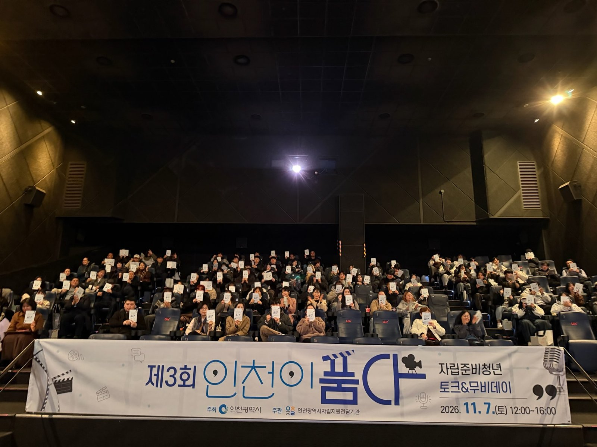
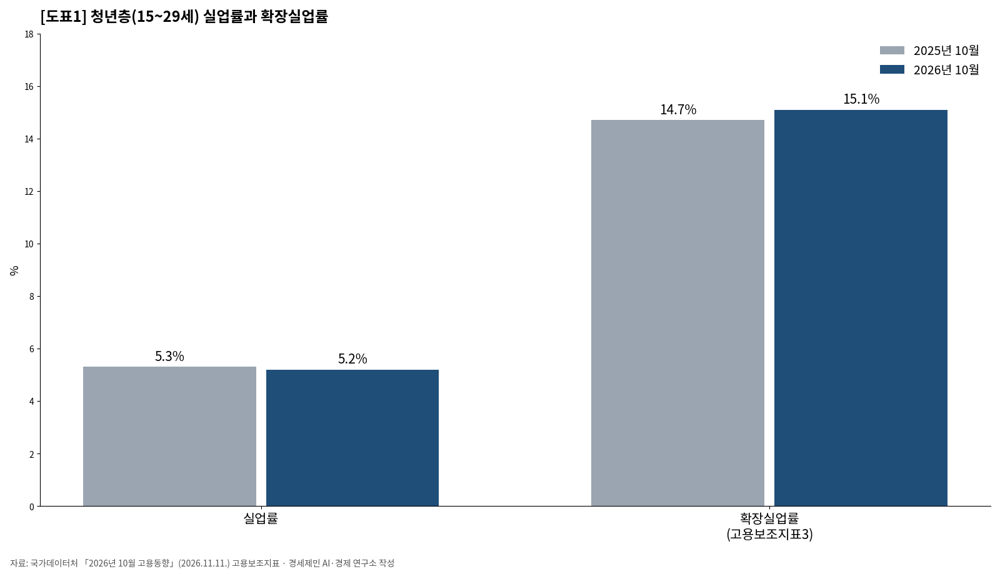
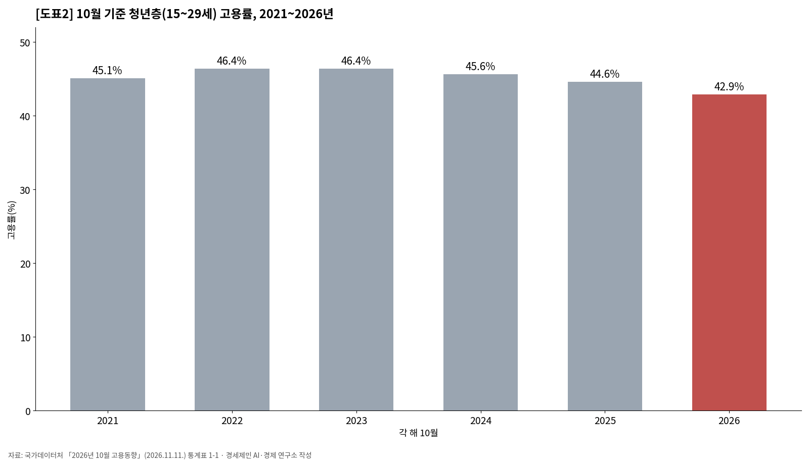
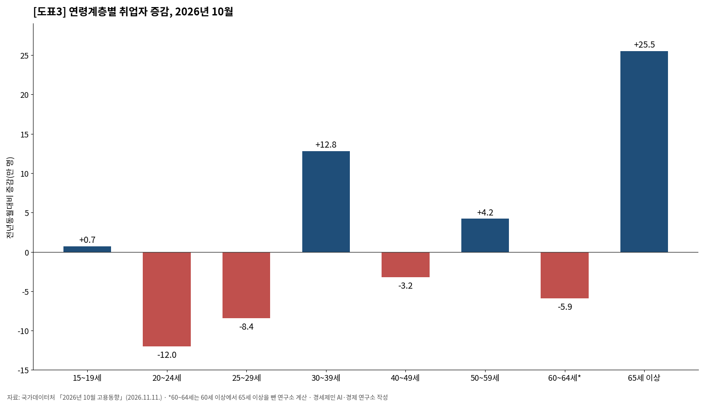
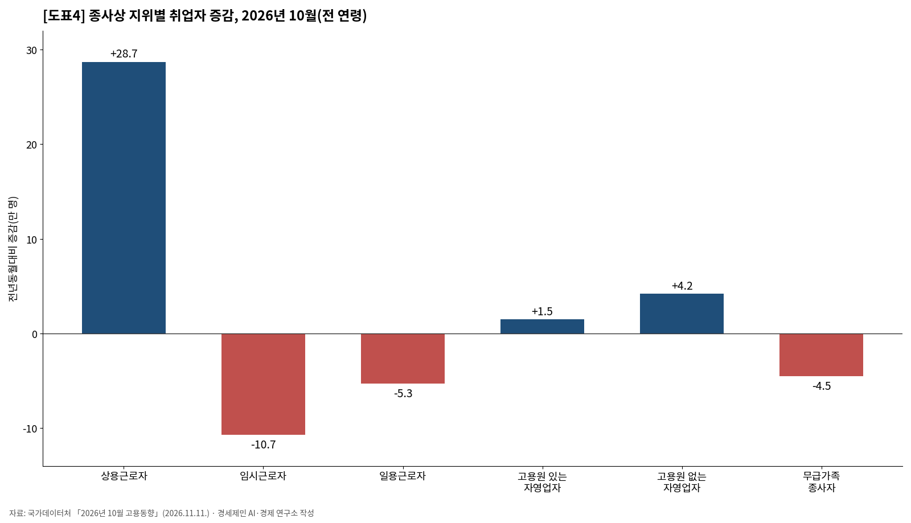

[고용 브리핑] 청년층 고용률 42.9%, 1년 새 1.7%포인트 하락
실업률 5.2%로 하락, 확장실업률 15.1%로 상승
확장실업률 상승, 주로 취업자 감소에 따른 분모 축소
20~24세 고용률 40.0%, 3.6%포인트 하락
법상 청년 연령(15~34세) 고용률 55.4%
요약
AI경제저널=김갑봉 기자 | 2026년 10월 청년층(15~29세) 고용률은 42.9%로 1년 전보다 1.7%포인트 내렸다. 통계표에 실린 2021년 이후 10월 가운데 가장 낮다. 같은 달 실업률은 5.2%로 0.1%포인트 내렸고, 확장실업률은 15.1%로 0.4%포인트 올랐다.

확장실업에 드는 청년은 57만2000명으로 1년 전보다 1만6000명 적다. 분모인 확장경제활동인구가 23만명 줄어 비율이 올랐고, 분모 감소의 19만6000명이 취업자 감소다(AI경제저널 계산).
청년층 취업자는 19만6000명 줄었다. 5세 연령 구간별로 나누면 약 10만6000명은 인구 효과(인구 감소와 연령 구성 변화), 약 9만명은 연령별 고용률 하락 효과다. 고용률 효과의 약 8만명이 20~24세에서 나왔다(AI경제저널 계산).
법상 청년 연령(15~34세) 취업자는 13만1000명 줄었다. 30~34세 취업자는 6만5000명 늘었다(AI경제저널 계산).
인천의 10월 고용률은 63.8%로 1년 전과 같고, 실업률은 2.2%로 0.6%포인트 내렸다. 월간 통계에는 인천·부천·김포·시흥 청년 지표가 없다.
제언은 넷이다. 15~34세 고용보조지표 공표, 정부 청년 대책의 지표 구성, 인천시와 부천·김포·시흥시의 생활권 청년 지표 집계, 상시가입자 통계 밖 청년 노동의 규모 공표다.
배경과 목적
국가데이터처는 11월 11일 「2026년 10월 고용동향」을 냈다. 전체 취업자는 2917만9000명으로 1년 전보다 13만9000명 늘었고, 실업률은 2.0%로 0.2%포인트 내렸다. 같은 자료에서 청년층 취업자는 332만5000명으로 19만6000명 줄었다.
「청년고용촉진 특별법」 제2조 제1호는 청년을 취업을 원하는 15세 이상 34세 이하인 사람으로 정한다. 다른 법령과 조례가 연령을 달리 정하면 그에 따를 수 있다. 이 조문은 2026년 3월 17일 일부개정(법률 제21477호)으로 바뀌었고 9월 18일부터 시행 중이다.
10월 청년층 실업률은 내렸고 고용률도 내렸다. 이 브리핑은 엇갈린 두 지표를 고용보조지표와 인구 변화로 나눠 본다. 확장실업률 변화를 분자와 분모로, 취업자 감소를 인구 효과와 고용률 효과로 가르고, 고용보험 자료로 방향을 대조한다.
자료와 방법
자료는 셋이다. 첫째는 국가데이터처 「2026년 10월 고용동향」 보도자료와 통계표다. 둘째는 고용노동부 「2026년 10월 고용행정 통계로 본 노동시장 동향」(11월 9일)이다. 셋째는 관계부처 합동 제13차 일자리전담반 회의 보도자료(11월 11일)다. 해석에는 한국은행 조사국 BOK 이슈노트 두 편을 인용한다.
고용보조지표3, 곧 확장실업률은 실업자에 두 집단을 더해 센다. 첫째는 시간관련 추가취업가능자로, 주 36시간 미만 일하면서 더 일하기를 바라고 더 일할 수 있는 취업자다. 둘째는 잠재경제활동인구로, 지난 4주 동안 구직 활동을 했지만 당장 일할 수 없었거나 일할 수 있는데 구직 활동을 하지 않은 취업 희망자다. 분모는 경제활동인구에 잠재경제활동인구를 더한 확장경제활동인구다.
청년층 실업자·경제활동인구·인구·취업자는 통계표 1-1(15~29세)의 소수점 값을 썼다. 5세 연령 구간별 인구·취업자는 보도자료 연령계층별 취업자 및 고용률 표의 천 명 단위 값을 썼다. 시간관련 추가취업가능자와 잠재경제활동인구는 보도자료 고용보조지표 표의 천 명 단위 값을 썼다. 다시 계산한 청년층 확장실업률은 2025년 10월 14.65%, 2026년 10월 15.12%로 공표치 14.7%, 15.1%와 같다. 시간관련 추가취업가능자와 잠재경제활동인구는 천 명 단위 반올림값이다.
확장실업률 변화는 분모를 1년 전 값으로 고정한 분자 효과와 나머지 분모 효과로 나눴다. 분모를 올해 값으로 고정하면 분자 -0.42%포인트, 분모 +0.89%포인트로 결론은 같다. 취업자 변화는 15~19세·20~24세·25~29세 구간마다 둘로 나눠 더했다. 인구 변화에 1년 전 고용률을 곱한 것이 인구 효과, 올해 인구에 고용률 변화를 곱한 것이 고용률 효과다. 월간 표본조사의 하위 집단 한 달 증감에는 표본 변동이 크다. 이번 보도자료와 통계표에는 청년 고용보조지표의 표준오차가 없고, 표본 설계는 실업자의 연간 상대표준오차를 나라 전체 3%, 시도 5~15% 미만으로 맞춘다.
결과
청년 취업자 감소가 줄인 분모와 확장실업률 상승
청년층 실업자는 18만2000명으로 1만7000명 줄었다. 청년층 잠재경제활동인구는 27만5000명으로 1만7000명 줄었다. 청년층 시간관련 추가취업가능자는 11만5000명으로 1만8000명 늘었다. 세 집단을 합한 청년은 57만2000명으로 1년 전 58만8000명보다 1만6000명 적다(AI경제저널 계산).
분모인 청년층 확장경제활동인구는 401만2000명에서 378만2000명으로 23만명 줄었다. 이 가운데 19만6000명이 취업자 감소이고, 실업자와 잠재경제활동인구는 각각 1만7000명 줄었다. 확장실업률 상승 0.47%포인트 가운데 분자 감소는 -0.40%포인트, 분모 감소는 +0.87%포인트로 작용했다(AI경제저널 계산). 확장실업에 드는 청년을 청년층 인구로 나눈 비율은 7.44%에서 7.37%로 거의 같다. 확장실업 인원을 그대로 두고 취업자만 19만6000명 줄이면 확장실업률은 0.75%포인트 오른다(AI경제저널 계산).
실업자에 시간관련 추가취업가능자를 더한 청년층 고용보조지표1은 8.0%에서 8.5%로 올랐다. 이 지표의 분자는 29만6000명 안팎으로 1년 전과 거의 같다. 상승은 분모인 경제활동인구가 21만3000명 줄어 생겼다(AI경제저널 계산). 전체 연령의 시간관련 추가취업가능자는 69만6000명으로 1년 전 69만7000명과 비슷했다.

20대 초반에 몰린 고용률 하락
청년층 인구는 14만1000명 줄었다. 5세 구간별로 나누면 취업자 감소 19만6000명 가운데 약 10만6000명은 인구 효과, 약 9만명은 연령별 고용률 하락 효과다(AI경제저널 계산). 인구 효과는 순수 인구 감소 약 6만3000명과 연령 구성 변화 약 4만3000명을 합한 값이다. 분해 순서를 바꾸면 인구 효과 10만2000명, 고용률 효과 9만4000명이다. 청년층 고용률 하락 1.72%포인트 가운데 0.56%포인트는 15~19세 비중이 커지고 25~29세 비중이 작아진 연령 구성 효과다. 청년층 경제활동참가율은 45.2%로 1.9%포인트 내렸다.
20~24세 취업자는 88만명으로 12만명 줄었고, 고용률은 40.0%로 3.6%포인트 내렸다. 이 연령의 경제활동참가율은 41.9%로 4.2%포인트, 실업률은 4.6%로 0.7%포인트 내렸다. 25~29세 취업자는 231만3000명으로 8만4000명 줄었다. 그 가운데 약 6만9000명은 인구 감소분이다(AI경제저널 계산). 25~29세 고용률은 71.0%로 0.5%포인트 내렸다.
청년층 비경제활동인구는 424만6000명으로 7만2000명 늘었고, 그 가운데 「쉬었음」 인구는 37만1000명으로 3만8000명 줄었다. 보도자료는 활동 상태별 비경제활동인구를 전체 연령으로만 싣는다. 전체 연령에서는 재학·수강이 13만1000명, 취업준비자가 2만1000명 늘었다. 늘어난 청년 비경제활동인구가 진학과 취업 준비 가운데 어디로 갔는지는 이 자료로 가를 수 없다.
청년층 취업자의 전년 같은 달 대비 감소 폭은 9월 14만7000명에서 10월 19만6000명으로 커졌다. 원계열로 9월에서 10월 사이 청년층 경제활동인구는 10만4000명 줄었다. 1년 전 같은 구간에는 2만3000명 줄었다(AI경제저널 계산).

65세 이상에 몰린 증가와 전체 상용직 증가
전체 취업자를 연령별로 보면 65세 이상이 25만5000명 늘어 전체 증가 13만9000명보다 많다. 같은 기간 65세 이상 인구는 56만9000명 늘었고, 고용률은 41.5%로 0.2%포인트 올랐다. 30대는 12만8000명, 50대는 4만2000명 늘었다.
20대 취업자는 20만3000명 줄었다. 40대 취업자는 3만2000명 줄었지만 인구가 10만1000명 줄어 고용률은 0.6%포인트 올랐다. 60~64세 취업자는 5만9000명, 인구는 7만3000명 줄었다. 이 연령의 고용률은 65.5%에서 65.2%로 내렸다(60세 이상과 65세 이상의 차, AI경제저널 계산).
전체 취업자 기준으로 상용근로자는 28만7000명 늘었고, 임시근로자는 10만7000명, 일용근로자는 5만3000명 줄었다. 산업별로 숙박·음식점업이 13만7000명(5.8%) 줄어 감소 폭이 가장 컸다. 보건업·사회복지서비스업은 24만9000명(7.5%) 늘어 증가 폭이 가장 컸다. 이 자료는 종사상 지위를 연령별로 나누지 않는다. 한국은행 집필자들은 청년층 취업자 가운데 임시·일용직 비중이 팬데믹 뒤 늘었다고 분석했다.


고용보험 상시가입자로 본 방향과 차이
고용행정 통계는 고용보험에 든 상용·임시 근로자를 센다. 주 15시간 미만 근로자(3개월 이상 계속 근로자는 포함), 공무원과 사립학교 교직원, 자영업자, 일용직, 예술인, 특수고용·플랫폼 노무제공자는 빠진다. 최신 월 수치는 잠정치다.
29세 이하 상시가입자는 220만3000명으로 1년 전보다 5만4100명(2.4%) 줄었다. 60세 이상 상시가입자는 305만4000명으로 20만4200명(7.2%) 늘었다. 전체 상시가입자는 28만6000명 늘었다. 29세 이하 상시가입자 감소율 2.4%는 청년층 인구 감소율 1.8%에 가깝고, 경제활동인구조사의 청년층 취업자 감소율 5.6%보다 작다(AI경제저널 계산). 29세 이하 감소는 제조업 1만8000명, 정보통신업 1만5000명, 보건복지업 1만2000명 순으로 컸다.
고용노동부는 청년층 어려움은 이어지지만 29세 이하 상시가입자 감소 폭은 줄고 있다고 적었다. 전년 같은 달 대비 감소는 6월 6만2500명, 10월 5만4100명이다.
같은 표에서 29세 이하를 포함한 34세 이하 상시가입자는 418만4000명으로 1만5100명 줄었다. 전년 같은 달 대비 감소는 6월 1만2300명, 7월 7700명, 8월 9800명, 9월 1만300명, 10월 1만5100명이다. 감소 폭은 7월 뒤 석 달 연속 커졌다. 같은 기간 29세 이하 감소 폭은 3000명 줄었다. 30~34세 상시가입자 증가 폭은 7월 4만9400명에서 10월 3만9000명으로 줄었다(AI경제저널 계산). 34세 이하 감소 폭 확대는 30~34세 증가 둔화에서 나왔다.
법상 청년 연령(15~34세)의 고용 지표
국가데이터처는 9월 자료부터 15~34세 통계를 함께 낸다. 10월 15~34세 취업자는 632만3000명으로 13만1000명 줄었다. 고용률은 55.4%로 0.6%포인트, 실업률은 4.1%로 0.3%포인트 내렸다. 「쉬었음」 인구는 54만8000명으로 5만8000명 줄었다.
15~34세 취업자 감소는 15~29세 감소에서 나왔다. 30~34세 취업자는 6만5000명 늘었고 인구는 3만5000명 늘었다(AI경제저널 계산). 같은 보도자료의 고용보조지표 표는 청년층을 15~29세로만 싣는다. 15~34세의 확장실업률과 시간관련 추가취업가능자는 이번 보도자료와 통계표에 없다.
인천 권역 — 월간 통계에 없는 청년 지표
10월 인천의 15세 이상 인구는 276만6900명, 취업자는 176만5600명이다. 고용률은 63.8%로 1년 전과 같고, 실업률은 2.2%로 1년 전 2.8%보다 0.6%포인트 내렸다. 15~64세 고용률은 70.4%로 1년 전보다 0.6%포인트 올랐다(국내 전체 +0.3%포인트). 같은 달 국내 실업률은 0.2%포인트 내렸다.
부천·김포·시흥은 경기도에 속해 월간 통계로는 경기도 전체만 볼 수 있다. 10월 경기도 고용률은 63.5%로 0.1%포인트 내렸고, 실업률은 2.0%로 0.6%포인트 내렸다. 월간 고용동향 통계표는 시도별로 15세 이상 전체 지표만 싣고, 인천과 세 시의 청년 지표는 월간으로 나오지 않는다. 시도별 월간 수치는 표본이 작아 한 달 증감에 표본 변동이 섞일 수 있다.
해석
권대영 재정경제부 1차관은 11월 11일 제13차 관계부처 합동 일자리전담반 회의를 주재했다. 회의 보도자료는 10월 취업자가 4개월 연속 두 자릿수로 늘었고, 청년 「쉬었음」은 9개월 연속 줄었다고 적었다. 같은 자료는 청년 고용률 하락 폭이 9월 1.1%포인트에서 10월 1.7%포인트로 커졌다며 「청년 고용의 어려움이 지속되고 있다」고 적었다.
정부는 「국민일자리 프로젝트 추진방안」을 서둘러 마련하겠다고 밝혔다. 이 방안에 청년·고령층·조기 퇴직 중장년층 고용 여건 개선 과제와 훈련 기회 확대 방안을 담을 계획이다. 권 차관은 일자리를 두고 「수출 중심의 경제성장의 온기를 내수와 민생으로 흐르게 하는 가장 중요한 통로이자 혈맥」이라고 강조했다.
한국은행 조사국 황수빈 과장·정강희 조사역·정성엽 팀장은 10월 26일 BOK 이슈노트 「청년고용 부진 및 정책 과제」를 냈다. 이슈노트는 한국은행 공식 견해가 아니라 집필자 견해다. 집필자들은 2014~2019년 부진기에 청년 확장실업률이 21~23%까지 올랐다고 적었다. 이들은 최근 청년층의 양적 지표가 악화되고 있으나 과거 부진기에 비하면 그 수준이 두드러지지 않고, 임시·일용직 비중 같은 고용의 질에서 악화가 뚜렷하다고 평가했다.
집필자들은 1차 노동시장 수요가 정체하자 청년이 2차 노동시장으로 하향 진입하는 경향이 강해졌다고 풀이했다. 원인으로는 상용직 고용창출력이 낮은 IT제조업 중심의 산업구조 재편을 지목했다. 노동수요가 회복돼도 청년 고용 개선이 늦어지는 이력 현상(hysteresis, 충격이 지나간 뒤에도 남는 고용 손상)이 나타날 수 있다고 봤다.
처방으로 집필자들은 일자리 정책만으로는 근본 해결에 한계가 있다며 산업정책과 노동시장 구조 개선의 병행을 제시했다. 산업정책으로는 IT제조업 성장이 연관 부품·장비와 전문서비스업, 내수로 번지게 하는 생태계 연계와 대학교육과 산업의 연계를 들었다. 노동시장 쪽으로는 노동교체비용 부담과 제도적 장벽 완화, 직무·성과 중심 임금체계 전환, 고용계약 형태의 다양화를 들었다. 집필자들은 정부의 「청년일자리 회복방안」(8월 28일)이 2차 시장에서 출발한 청년의 상향 이동을 도와 매칭 효율에 기여할 것으로 기대했다. 다만 실효성을 높이려면 교육·훈련을 실제 직무 수요와 연계해야 한다고 적었다.
같은 조사국 오삼일 팀장·오영식 조사역은 8월 18일 BOK 이슈노트 「청년고용 위축, AI 탓인가?」를 냈다. 집필자들은 국내 신규채용 가운데 청년층 비중이 2014~2019년 36.9%에서 2024~2026년 29.3%로 낮아졌다고 밝혔다. 신규채용은 최근 1개월 안에 취업한 사람이다.
집필자 계산으로는 국민연금 사업장 가입자 기준 2022년 6월부터 2026년 6월까지 청년층 일자리가 28만5000개 줄었다. 이 가운데 26만8000개가 집필자들이 AI 노출도가 높다고 분류한 업종에서 줄었다. 이 노출도는 업무의 기술적 노출 가능성이고 실제 AI 도입률이 아니다. 같은 기간 50대 일자리는 23만개 늘었고, 그 가운데 17만3000개가 같은 업종에서 늘었다. 집필자들은 2022년 기준 청년 고용의 62.4%, 50대 고용의 50.5%가 이미 이 업종에 있었다고 덧붙였다. 두 집필자는 이를 경력직 중심 채용 같은 기존 변화를 AI가 앞당긴 결과로 해석하고, 경력 사다리 재설계와 기업 훈련·멘토링 비용 지원을 처방으로 들었다.
10월 청년 고용의 변화는 고용률과 경제활동참가율 하락에서 먼저 드러난다. 확장실업률과 고용보조지표1의 상승은 대부분 청년 취업자가 줄어 분모가 작아진 데서 나왔다. 확장실업에 드는 청년의 수와 인구 대비 비율은 1년 전과 거의 같다. 다만 청년 비경제활동인구가 7만2000명 늘어난 사이 잠재경제활동인구와 「쉬었음」은 줄어, 늘어난 비경제활동은 잠재경제활동인구로 잡히지 않는 쪽에 있다. 상시가입자 감소율이 인구 감소율에 가깝고 취업자 감소율은 그 두 배를 넘어, 청년 취업자 감소가 고용보험 상시가입 일자리 밖에 몰렸을 가능성이 있다. 이번 자료로는 확인할 수 없다. 청년층 시간관련 추가취업가능자 1만8000명 증가와 확장실업 인원 1만6000명 감소는 모두 한 달 표본 수치라, 어느 쪽도 추세로 단정할 수 없다.
한국은행 집필자들은 노동교체비용과 제도적 장벽 완화, 고용계약 형태 다양화를 처방으로 들었다. 이 처방은 같은 집필자들이 진단한 2차 노동시장 하향 진입과 맞물린다. 이 처방이 청년의 1차 시장 진입을 넓힐지, 2차 시장 체류를 늘릴지는 청년 임시·일용직 비중과 상향 이동률을 함께 보아야 가릴 수 있다.
제언
국가데이터처 — 법상 청년 연령(15~34세) 고용보조지표 공표
「청년고용촉진 특별법」은 9월 18일부터 청년을 15~34세로 정한다. 국가데이터처는 15~34세 고용률·실업률을 내지만, 고용보조지표는 15~29세로만 낸다. 10월에는 30~34세 취업자가 늘어 15~34세 지표의 하락 폭이 15~29세보다 작았다. 두 연령 기준을 함께 보아야 청년 고용의 실제 폭을 가늠할 수 있다. 국가데이터처가 월간 고용동향 고용보조지표 표에 15~34세 확장실업률, 시간관련 추가취업가능자, 잠재경제활동인구를 15~29세와 나란히 싣는 방안을 제안한다. 첫 단계로 국가통계포털에 15~34세 계열을 올리고, 2027년 1월 기준 자료부터 보도자료에 싣는 순서가 현실적이다.
재정경제부·고용노동부 — 청년 대책의 지표 구성
재정경제부와 고용노동부가 마련 중인 「국민일자리 프로젝트 추진방안」과 「청년일자리 회복방안」(8월 28일) 점검에 청년 고용률을 주 지표로 두기를 제안한다. 연령은 15~29세와 15~34세를 함께 본다. 고용보조지표는 목표치로 단독으로 쓰지 않고 고용률·경제활동참가율과 짝지어 보는 방식이 맞다. 시간관련 추가취업가능자는 수와 취업자 대비 비중을 분기 평균으로 보조 지표에 두고, 고용보험 상시가입자는 포괄 범위의 한계를 밝혀 참고 지표로 둘 것을 제안한다. 고용계약 형태 다양화 같은 대책을 넣는다면 청년 임시·일용직 비중을 같은 점검표에 올려 고용의 질 변화를 함께 본다. 지표 구성은 추진방안 발표 때 함께 밝히기를 제안한다.
인천시·경기도 — 생활권 청년 고용지표 공동 집계
월간 통계로는 인천과 부천·김포·시흥 청년의 고용률과 시간관련 추가취업가능자를 알 수 없다. 인천시와 부천·김포·시흥시가 협약을 맺고 인천연구원이 국가데이터처 지역별고용조사 자료로 생활권 청년 지표를 내는 방안을 제안한다. 경기도와 경기연구원은 자료 협조를 맡고, 먼저 이미 공표된 시도·시군 항목을 확인한다. 시군 단위 청년 지표는 고용률을 우선하고, 표본이 작은 시간관련 추가취업가능자는 연간 또는 여러 해 묶음으로 낸다. 고용보험 상시가입자의 시군·연령별 자료는 고용노동부에 제공을 요청하고, 첫 집계는 2027년 상반기를 목표로 한다. 집계 연령은 법과 각 지방정부 청년 조례의 연령을 대조해 정하고, 기준이 다르면 두 기준을 함께 싣는다. 시군 단위 청년 표본이 작은 지표는 표본 오차를 함께 밝히고, 정기 공표 전에 통계 작성 승인 대상인지 국가데이터처와 협의한다.
국가데이터처·고용노동부 — 상시가입자 통계 밖 청년 노동의 규모 공표
고용보험 상시가입자 통계에는 주 15시간 미만이면서 3개월 미만 일한 근로자, 일용직·예술인·노무제공자 가입자, 고용보험 미가입자가 빠진다. 시간관련 추가취업가능자로 잡힌 청년의 일부가 이 자리에 있을 수 있지만, 지금 자료로는 확인할 수 없다. 국가데이터처와 고용노동부가 자료 결합 절차를 거쳐 경제활동인구조사 부가조사와 고용보험 자료를 맞대기를 제안한다. 이렇게 상시가입자 통계 밖 청년 취업자를 고용보험 미가입자와 일용직·노무제공자 가입자로 나눠 해마다 공표한다. 먼저 부가조사의 사회보험 가입 항목으로 미가입자 규모를 낼 수 있는지 확인하고, 이 규모를 「청년일자리 회복방안」 점검 때 함께 보고하는 순서가 현실적이다.
참고문헌
공식 발표자료
- 「2026년 10월 고용동향」 보도자료와 통계표, 국가데이터처, 2026.11.11., https://mods.go.kr/board.es?mid=a10301010000&bid=210&list_no=447893&act=view
- 「2026년 10월 고용행정 통계로 본 노동시장 동향」 보도자료, 고용노동부, 2026.11.9., https://moel.go.kr/news/enews/report/enewsView.do?news_seq=20216
- 「제13차 관계부처 합동 일자리전담반 회의 개최」 보도자료, 재정경제부·고용노동부(관계부처 합동), 2026.11.11., https://moel.go.kr/news/enews/report/enewsView.do?news_seq=20231
사진 출처
- [사진1] 인천광역시 아동정책과 보도자료 「인천시, 자립준비청년과‘따뜻한 동행’, 지지망 다진다」 첨부 사진, 2026.11.08., https://www.incheon.go.kr/IC010205/view?repSeq=DOM_0000000015924425 (공공누리)
법령
- 「청년고용촉진 특별법」(법률 제21477호, 2026.3.17. 일부개정, 2026.9.18. 시행) 제2조, 국가법령정보센터, https://www.law.go.kr/법령/청년고용촉진특별법
연구보고서
- 황수빈·정강희·정성엽, 「청년고용 부진 및 정책 과제」, BOK 이슈노트 제2026-27호, 한국은행, 2026.10.26., https://www.bok.or.kr/portal/bbs/P0002353/view.do?nttId=11065913&menuNo=200433
- 오삼일·오영식, 「청년고용 위축, AI 탓인가? 변화하는 경력 사다리와 대응 과제」, BOK 이슈노트 제2026-19호, 한국은행, 2026.8.18., https://www.bok.or.kr/portal/bbs/P0002353/view.do?nttId=11063845&menuNo=200433
[도표 출처]
- [도표1] 국가데이터처 「2026년 10월 고용동향」 보도자료 고용보조지표, [도표2] 같은 자료 통계표 1-1(15~29세), [도표3] 같은 보도자료 연령계층별 취업자(60~64세는 AI경제저널 계산), [도표4] 같은 보도자료 종사상 지위별 취업자. 모두 AI경제저널 작성
※ 이 기사는 인공지능기자 위민아이(Wemin_AI)와 협력해 작성했습니다.
관련기사
- [고용 브리핑] 11월 27일 난임치료휴가 유급 4일, 정부 급여 상한 33만6840원(고시안)
- [AI 노동시장①] AI 노출 업종에서 좁아진 청년 첫 일자리
- 청년 많이 일하는 100곳, 장시간 노동·공짜 야근 감독 받는다
- 인천 내년 청년예산, 금액 적힌 13개 사업 223억원 중 58%가 월세
저작권자 © AI경제저널 무단전재 및 재배포, AI학습 및 활용 금지